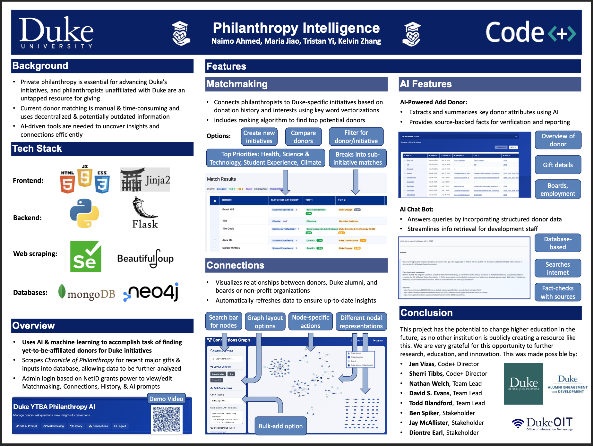

Philanthropy Intelligence Platform

Overview
Developed a full-stack web platform for Duke's alumni office to match philanthropists with research initiatives, automating the donor-scholar matching process and significantly reducing manual research time.
Key Responsibilities
- Developed full-stack web platform using Flask, JavaScript, HTML/CSS, Docker, MongoDB, and Neo4j for matching philanthropists to research initiatives
- Automated donor-scholar matching for 11,000+ profiles using Selenium, BeautifulSoup, and OpenAI API
- Incorporated an NLP fuzzy-matching engine to reduce research time by 80%
- Designed and implemented database schemas for efficient data storage and retrieval
- Created intuitive user interface for donor research and matching workflows
Technologies Used
Flask
JavaScript
HTML/CSS
Docker
MongoDB
Neo4j
Selenium
BeautifulSoup
OpenAI API
NLP
Python